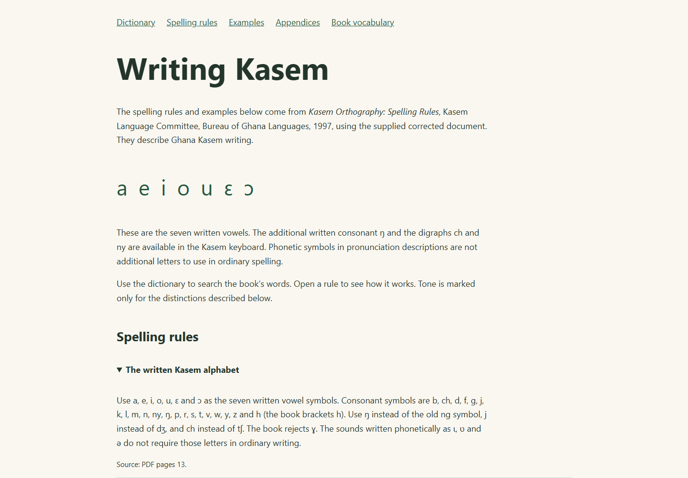
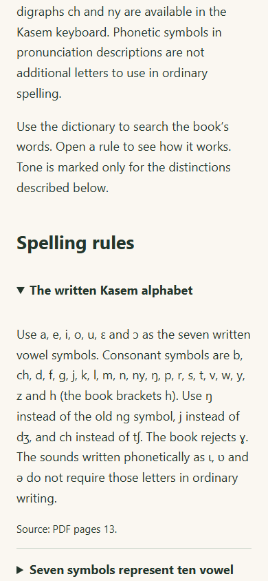

The words and spelling guidance in the supplied corrected Kasem Orthography book now have a home in Indigen World. The source is the Kasem Language Committee’s Spelling Rules, published by the Bureau of Ghana Languages in 1997.

All 646 vocabulary rows in the corrected document are represented, together with grammatical terms, pronouns, numerals and words used in the spelling explanations. The import covers 889 dictionary word and form records and five expressions; 23 records matched existing entries and received source references. Different meanings and noun-class forms remain distinct.
The spelling guide includes 28 rules and 74 source examples. Sixty-nine translated examples have been published for exact lookup. The guide also keeps the untranslated example and the ambiguous conditional examples visible with their limits explained. No recordings, invented translations or independent speaker reviews have been added.
The book specifies seven written vowels: a, e, i, o, u, ɛ, ɔ. Its spelling rules use ordinary letters and letter combinations for sounds that phonetic descriptions show with other symbols. The written alphabet also includes ŋ and the digraphs ch and ny.
Character buttons in the online dictionary, the contributor editor and the mobile source now follow that convention. They no longer suggest the phonetic-only letters ɩ, ʋ, ə, the rejected ɣ, or a general mid-tone macron. The Android layout includes the book’s written letters, acute and grave marks, and shortcuts for forms such as á, dé, wó and yé. The English layout remains available through the language switch.
Open Spelling guide in the online dictionary. Expand a rule to read its explanation and examples, consult the pronoun and numeral tables, or filter the book’s vocabulary by Kasem or English. The guide covers long vowels, labialisation, full word forms, word division, compounds and the limited use of tone marks.

Kawuri’s updated source lookup quotes the book’s printed examples and spelling rules directly. It identifies them as printed source material rather than community-reviewed contributions, and does not create new sentences by combining unrelated words.
The supplied document contains conflicting pronoun spellings, apparent typographical errors and identical conditional examples with different English meanings. These issues are documented. The keyboard follows the explicit tone rules for plural á; the reference tables preserve their source wording. Historical dictionary spellings remain available for lookup.
Release status: The book’s dictionary records, expressions, grammar rules and translated source examples were published and verified in production on October 8, 2026. Web Hosting and Kawuri deployment are being verified. The corrected Android keyboard requires a new app binary; a Google Play rollout has not been confirmed. This article is prepared for Blogger publication and has not itself been published.
Source credit: Kasem Language Committee, Kasem Orthography: Spelling Rules, Bureau of Ghana Languages, Accra, 1997. ISBN 9964-2-0366-7. Copyright remains with the source publisher; no open licence or model-training release is asserted.